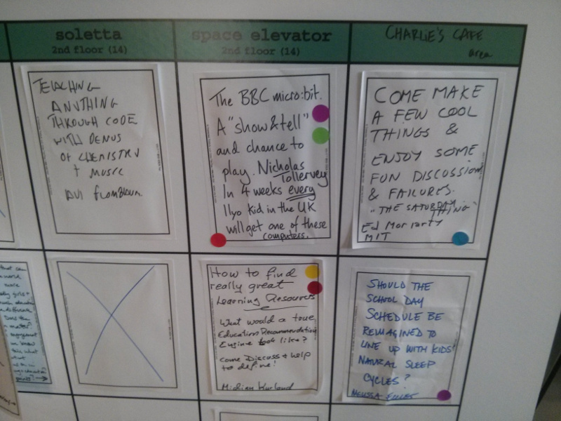
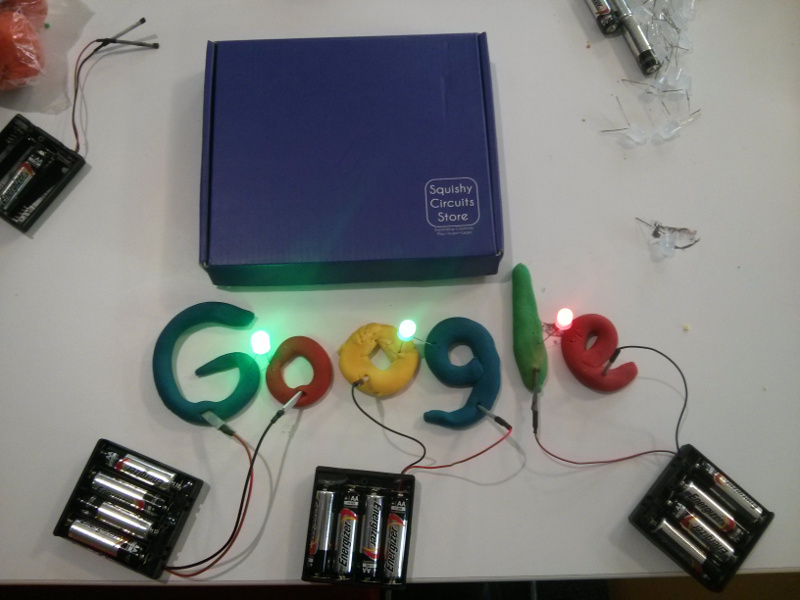
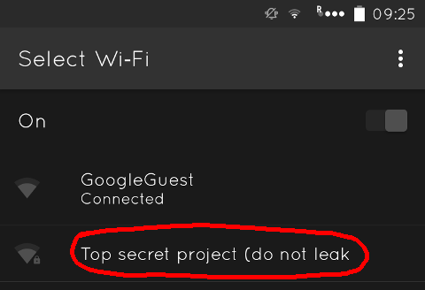

EdFoo
I was invited to the world's first EdFoo conference, held at Google's HQ in California over the weekend of the 19th-21st February.
Foo? Yes, Foo (aka Friends Of O'Reilly).
I've written three books for O'Reilly, the last one being a short report on Python in Education. I suspect that's how I got on the invite list. EdFoo, as the name suggests, was a self-organised conference about education and I'm pleased I was able to attend. (I'm also indebted to the Python Software Foundation for their support via a travel grant to cover my flight from the UK.)
I had a fantastic time with good omens from the start: I flew to San Francisco on an almost-empty plane. Even the US border guard wanted a friendly chat. Apparently, "all you English people drink tea with your pinky stuck out because it helps balance the cup." Who was I to argue with the fierce looking dude in a uniform whose decision it was for my entry into the US..? "Hahaha, yes... of course we do, all the time..." I smiled back.
I took a shared shuttle from the airport to the hotel. My fellow passengers were a French dude who didn't know where he was going ("But I 'erv ze adresse 'ere. Non, non, non... ze adresse iz 'ere someware. Non. Ici. Oui. Ah, non..." etc), and a young Indian chap arriving to start his first job out of college at Google. After dropping the lost Frenchman in the middle of nowhere (he insisted it was the correct location) we chatted about cricket, much to the consternation of our American driver. It's like a secret code only commonwealth citizens appear to understand. :-)
While driving I was reminded of the Dionne Warwick song, "Do You Know the Way to San Jose?". I was ACTUALLY ON THE BLOODY WAY to San Jose. It's a four lane motorway. In future I can truthfully shout "YES!" whenever I hear the song played on the radio.
Foo camps are a sort of un-conference: the programme is organised by the attendees whilst at the event. A pre-prepared blank timetable and large sticky-notes are used to create a schedule. Interest in various activities is indicated by the copious use of sticky spots.

As you can see, I contributed a session about the BBC micro:bit project. People were very interested in the crazy notion of giving every 11 year-old in the UK a small programmable computer.
There were lots of wonderful aspects to this conference:
- The people were, without exception, smart, friendly and enthusiastic;
- The sessions were stimulating, lively and diverse in scope;
- It was safe to contribute and I (personally) always got back more because of putting in.
Since I didn't know anybody, I was at my most gregarious. For example, at meal times I'd choose a table at random and ask, "can I join you?".
Here's a typical encounter:
"Of course!" replies the friendly looking lady.
I discover that she's a professor of anatomy, makes BAFTA award winning TV programmes and has a passion for whales. We talk on a diverse range of subjects and my tuba playing background comes up. It launches us into a discussion about the anatomy of circular breathing and how this is something whales may do when vocalising whale song. We're joined by a trombone playing colleague of hers and have a lovely time geeking out with stories of whales, youthful musical adventures, and anatomy.
Thank you Joy and Jeffrey for such an impromptu and entertaining lunch.
I took part in a wide variety of sessions. Highlights included a technical description of how Jupyter kernels work (more on this below), a discussion about the mechanics of curriculum generation and accidentally walking into a stimulating and enjoyable seminar attempting to work out why real schools are not like EdFoo.
It was a great pleasure to collaborate in such conversations. Often, the person who convened each session merely got the ball rolling. There was enough intellectual momentum in the room that conversation kept on rolling in all sorts of interesting directions.
My own session was a case in point. I spent about 15 minutes giving a brief overview of the micro:bit project, my contribution via the Python programming language and a demonstration of the device. Questions followed but it was most fun when I gave out a handful of devices for people to play with. I learned that Americans call crocodile clips, "alligator clips" so settled on calling them crocogator clips for the sake of trans-Atlantic harmony. I also learned that Chromebooks are popular in US schools. A professor of mechanical engineering even got excited enough to grab his laptop and implement a LabVIEW based controller to drive the micro:bit via the MicroPython REPL. It was very rewarding for me to see a diverse bunch have such fun exploring and experimenting with the device. I also had lots of post-session questions in the corridor since several people couldn't make my session because it clashed with other stuff.
I was conscious that EdFoo wasn't just a case of "Nicholas is off on a jolly" (as my wonderful wife puts it). I went with an open mind but was determined that there be tangible results from my attendance. Fortunately, the very first session I attended offered just such an opportunity.
The Jupyter project is written in Python and provides a means of presenting code, text and other digital assets in a sort of interactive notebook. If you're not technical, imagine if Leonardo's notebooks were interactive and reacted to a reader's modifications - that's what reading a Jupyter notebook feels like. I hope the educational potential of this tool is obvious.
The session on Jupyter was led by the creator of the project, Fernando Perez, and included contributions from Jupyter users as diverse as Google's Director of Research, Peter Norvig, Professor of Physics, Lorena Barba and staff from O'Reilly, who use Jupyter as a publishing platform.
As the session progressed it became clear notebooks record an interactive and engaging record of the author's movement of thought. As Norvig demonstrated, it's possible to change the code contained in a notebook and "poke it with a stick" as it were. Readers get to follow the author's train of thought but also pause and play with code to test their understanding of the concepts contained therein. As code is modified outputs automatically update (i.e. generated content within the notebook reacts to a reader's intervention).
I wondered how a teacher in the UK could use such a tool to deliver Python lessons to children. Could Jupyter be used to create and share interactive resources for the BBC micro:bit? I asked a few pointedly technical questions and discovered the presentation and evaluation of notebooks is separated. Presentation is done in a browser whereas evaluation of code is done in a "kernel". "How hard is it to write a kernel?" I asked. "It's well documented", answered an unsuspecting Fernando.
That afternoon I hacked together a new kernel to interact with a BBC micro:bit. I was able to control the micro:bit attached to my laptop from within a notebook in my browser. It took me about an hour and proved to be remarkably simple. Later in the weekend I integrated the Jupyter Qt widget into my Mu code editor for children, teachers and beginner programmers. Upon reflection, this is perhaps not the way to go - I believe the web-based version of Jupyter is superior. Happily, it's relatively easy to embed a browser into a Qt application like Mu so watch this space! I'm giving a presentation at next weekend's Raspberry Pi birthday conference about Mu, so I'll reveal what I've been up to as a part of my talk. It'll be interesting to see what reaction I get - especially from teachers.
I was also intrigued by the Jupyter contribution from O'Reilly. They've built some sort of authoring platform on top of Jupyter and gave a quick demo of Norvig working his way through a problem. I asked if it was open source to which the O'Reilly people responded that it wasn't. I pointed out that if it wasn't then someone would be bound to copy and re-create it. I think there was a bit of misunderstanding or crossed wires: perhaps the O'Reilly people thought I was talking about their (excellent) content. I was actually referring to the authoring platform they appear to have created on top of Jupyter. I imagine teachers would have a fantastic time with such a tool. I know of several secondary teachers in the UK who'd lap it up.
The other practical take-away from the conference was via a conversation with an educator who used Google's Chromebooks. These cheap and simple laptop computers are apparently very popular in schools in both the US and UK. "Can I use my micro:bit with a Chromebook?" was their concern.
Why yes, is my response.
I've adapted the web-based editor I wrote for the "official" BBC website and, via the magic of Chrome's serial API, added a REPL client so kids can interactively program their devices.
:-)
Yet another highlight was breakfast on Sunday morning: I had a lot of fun creating squishy circuits (they're made from a sort of dough) and had a professor of electrical engineering from MIT show me how to make a simple LED flashy thingamabob that makes a great light display in a dark room.

It's such fun to play!
Only 50% of the attendees are invited back. If I'm not, I'd love my place to be taken by someone from the UK. If there's but one criticism of the conference it is that it mainly involved people from the US. There's a huge amount of innovation, experimentation and success happening in education in the wider world. EdFoo could be a wonderful opportunity to bring an international and diverse group of education pioneers together. Since I'm making "moon on a stick" suggestions, my vote would be to hold it in Athens, the home of Plato's Academy and Aristotle's Lyceum (but I'm biased because I'm European and have a background in Philosophy).
Finally, sincere thanks to our hosts, Google, who did a magnificent job. I was particularly amused by the available WiFi SSIDs. :-)

Image credits: Leonardo Notebook © Trustees of the British Museum. The remainder were created by the author.